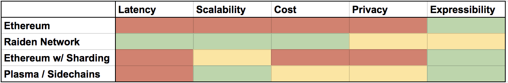
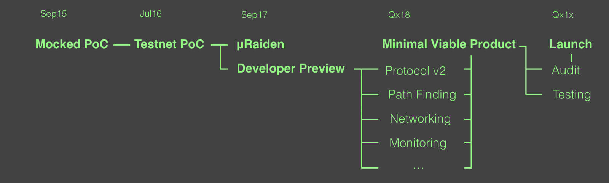

雷电网络：愿景，挑战与路线
愿景
区块链非常棒，但它们相当缓慢。
想象一下，你选购完商品后正在结账，但是你在刷卡之后需要等待10秒，收银员才会收到支付确认，而后你才可以离开。（多余的）大概9秒的时间太长了。
现在想象一下你是一个在计算机上运行的进程。你想要销售内容、数据、带宽、处理时间、存储或基础设施访问权限。想象一下，得到来自另一个进程的支付确认需要10秒钟时间。这比你本来所需时间多了几个数量级。这简直要疯了。与此同时，你销售的产品可能在你收到支付确认的时候就过期了。
在即将到来的机器对机器（M2M）经济中，软件自主地与其他软件进行贸易，这种经济模式将构成未来全球贸易的重要组成部分。但是机器的要求很高。他们想要以几乎零成本来快速转移大量资产。因此快速且交易费低廉的（微）支付将成为M2M经济的重要组成部分。
区块链是IoT（物联网）和M2M经济的支付基础设施的热门候选方案。结合稳定币（stable coins），该技术也可成为日常机器或者人类支付的可行方案。
但是要想（让区块链）成为可行的方案，基于区块链的支付系统需要满足快速、低成本和（高）可扩展性的需求。然而，这些方面正是当前区块链并不擅长的。
有许多（提升）可扩展性的方案，比如分片、侧链、交互式验证协议或状态通道。虽然这些方案都可能提升系统整体交易能力，但是只有像雷电网络这样的支付通道网络能够同时增加低成本与低延迟的特性。
我们的愿景是为机器和人类提供快速、可扩展、低成本的无中心化支付的全球基础设施。这基本上是中本聪最初的愿景，但是增加了（更好的）可扩展性，并准备支持一个拥有数千个不同专用代币的世界。
但是，它在实践中是什么样子的呢？
注意，以下是一个随机编造的故事！
5年后的一天，Bob在买一杯咖啡。从他的视角来看，他只是和往常一样使用智能手机来支付他的咖啡。但是在后台，他的钱包执行了多项任务，以方便支付。它使用了一些“月巴克”优惠券代币，还发送了一部分用户喜欢的稳定币来支付咖啡。店家发回一些“咖啡好买家”名誉代币，钱包会自动将这种代币进行链下互换，转换成当地的“社工基金”代币。与此同时，钱包将发送一部分“了不起的钱包开发者”代币给它的开发者，用于支付此次使用的交易费。为了与雷电网络进行交互，无需始终在线运行一个全以太坊节点和雷电客户端，Bob的应用程序（钱包）也会为提供服务（连接到以太坊生态系统）的可靠节点支付一笔雷电代币。因此，当后台机器在基于诸多代币的复杂商业和服务网络中进行交换时，用户仍拥有完美的体验。
挑战
支付通道网络是一个非常年轻的想法和技术。它们大约在两年前才被提出，而相比之下，区块链已经提出超过8年了。整体来看，它们是一项非常复杂的技术，无论在概念上或是实现上都很复杂。此外，有一点需要强调的是，闪电网络团队与雷电网络团队都没有确定最终的规范（或说明）。
下面我们将讨论一些仍需开展工作的主题。尽管我们在本文高度概括地介绍它们，但是它们都值得在未来单独发文阐述。
可扩展路由
如何在不知道全部通道及其可用性与容量的情况下，找到一条从发出者到接受者的路径是当前最重要的问题之一。一个有效的但是中心化的解决方案是，所有参与者持续向中心服务（节点或程序）报告它们的通道容量，并且通过中心服务查询路径。一个无中心但是低效的替代方案是，通过询问和错误查询或将通道更新信息广播给所有参与者，从而“暴力”找出一条路径。通过所谓小世界网络的高效路由模型是存在的，然而需要满足节点间的动态链接。因此，一个可行的系统需要在这些方法之间找到平衡。
维持一个平衡的网络/费用
寻路算法不应该仅仅提供任意路径，而最好是提供能够减少或至少避免增加中介通道不平衡性的路径。这可以通过参与者宣布收费来实现，这些费用有助于激励寻找最便宜的路径，并且无疑有助于维持网络的平衡。仿真结果表明，根据通道不平衡性增加的变化按比例增加交易费将显著延长通道的使用寿命。
在提供低延迟信息的同时保护隐私
另一个大问题就是保护所有参与者的端点隐私。为了帮助调解多跳转账，参与者需要有一个热钱包。在这样的设置下，最好不要公开暴露您的端点。因此就需要像耳语协议（Whisper）这样的被动消息协议，但与此同时需要规模达数百万的用户。
轻客户端
我们假设99%的参与者将使用雷电轻客户端来访问系统，而不是运行全节点。和当前用户使用Metamask访问Dapps（无中心应用程序）的方式类似，需要一个支持弱链接及很少有效节点在网络叶子上的协议。
离线委托质疑者
支付通道应该允许任何一方随时关闭通道。然而，在一个通道的结算时期，双方都需要在线以宣示他们已经收到的代币所有权。对于大多数常见用例来说，由于参与者不在线的时间更多，这在逻辑上是不可行的。因此我们需要一个第三方无中心系统，该系统收费代表下线的一方进行结算。
可升级性/治理
协议升级可能会影响数百万支付通道及其中的资金。与此同时，期望数以百万计的终端用户对于一些技术协议更新提案进行投票是不切实际的。因此，我们需要一个高效的治理机制，允许将（终端用户）的投票权授权给专家小组。
设定激励机制，以建立一个活跃的骨干网络
我们需要一个能够提供寻路、监控和全节点服务的无中心网络作为系统的骨干网络。这些服务的提供者需要得到补偿，才有动力继续提供服务。与此同时，协议的核心是除了必要的部分不应有任何其他费用，以保证建立一个平衡的网络。
测试
测试一个无中心且可扩展的点对点系统是很困难的。用数千节点的端对端进行测试也很难。模拟所有可能的攻击向量甚至更加困难。测试目前是并且仍然是当前雷电网络开发过程中的很大一部分。
路线
为了不让你因为路线图的细节而感到无聊，让我们来看一个明显的问题：它什么时候能准备好？
我们认为 µRaiden （微雷电）已经准备好，并且已经能够很好地应用在许多应用程序中。
对于雷电网络来说，答案就更加复杂了，但根据雷电最初的定义：“一旦它能够在不需要直接连接参与者的支付通道的情况下支持任意参与者间的转账，软件拥有安全审计并部署到了主链上，那么它就准备好了。”我们已经花了2年的时间，但是我们已经快完成了。添加安全审计（模块），部署在主网上，我们就完成了
你知道80/20规则。你可以在20%的时间内完成80%的工作，剩下20%的工作则需要花费80%的时间。成功的项目将尽可能多地交付剩下的20%，以获得更多应用并保持竞争力。
雷电网络在很多方面可以并且应该据需改进。
例如：隐私、寻路效率、通道寿命、轻客户端的无障碍访问、更短的结算周期、治理机制、可用性等等。要满足我们对于最小可用产品（Minimal Viable Product）的标准，以上的某些要求是必须的。
幸运的是，雷电网络是为了持续开发而设计的，其抽象设计允许许多组件并行升级。尽管如此，这仍需要时间，需要更深入的研究和努力工作。但这都是值得的。
到目前为止，我们只讨论了协议和软件。但是为了能有更广泛的应用，需要更加努力地引导建立一个围绕雷电网络的健康生态系统，使它成为开发者在选择支付基础设施时的首选。通过RND外部开发者计划设置第三方激励措施将是成功的关键。
结论
雷电队伍正在成长。我们一直以来并将继续招聘来自世界各地的人才。雷电网络是一次成为无中心的全球可扩展支付系统可行骨干网络的重要努力与尝试
这一令人兴奋的新技术的开发需要大量的汗水、时间和精力，但我们仍将致力于此，并坚信我们基于区块链的快速、廉价、可扩展支付（系统）的愿景一定能够实现。
雷电项目由Brainbot实验室领导。
本文转自 ETHFANS
原文链接: https://medium.com/@raiden_network/raiden-network-vision-challenges-and-roadmap-593dfa34b868
作者: 雷电网络